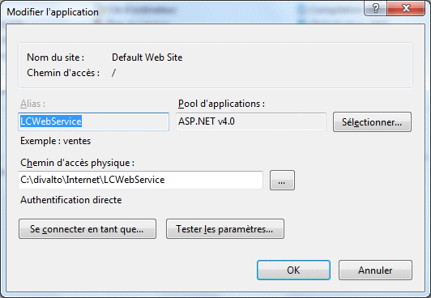
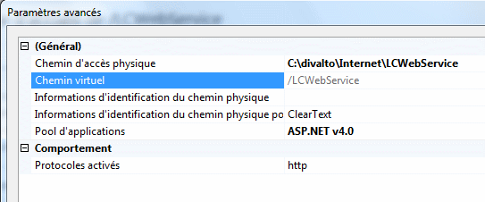
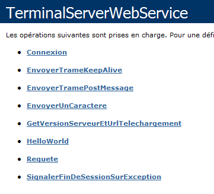
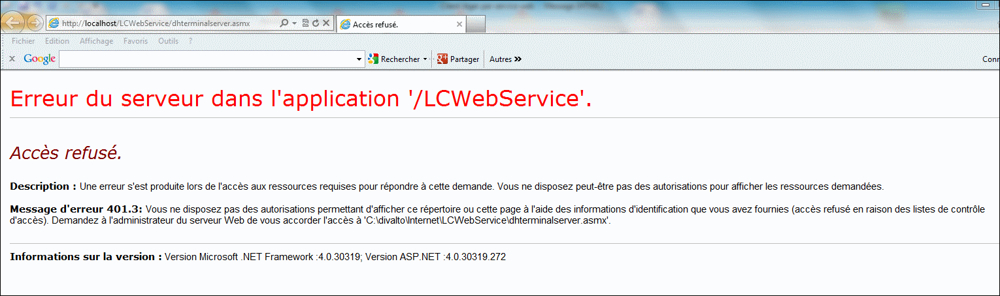
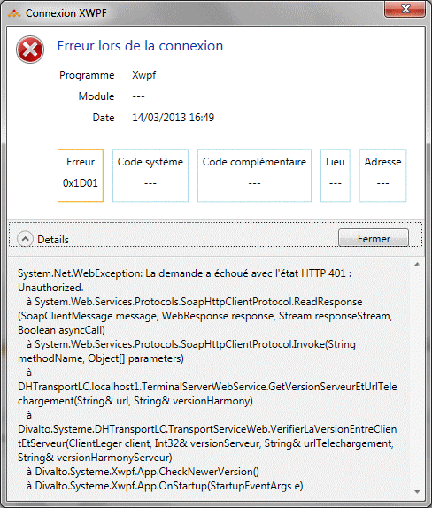
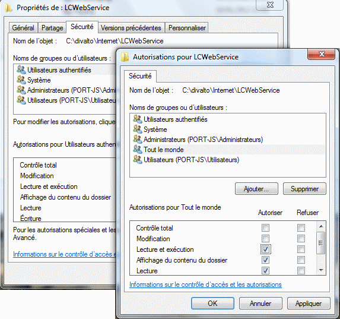

On privilégiera le mode Service Web pour des connexions de postes nomades, l’accès depuis Internet n’autorisant pas le dialogue sur des ports de communication « privés ».
Ce type de connexion nécessite la présence du service IIS de Microsoft sur le serveur d'applications (Cf. rubrique Installation du serveur Web IIS).
Pour qu’une page asmx du serveur soit accessible depuis le Web, il faut créer une application IIS 32 bits pointant le répertoire contenant cette page. On crée ainsi un répertoire virtuel, alias d'un chemin dans l’arborescence des fichiers du serveur.
Exemple :
Pour accéder au serveur via l'URL http://www.monserveur.fr/LCWebService/DHTerminalServer.asmx, créez sur le serveur une application IIS nommée "LCWebService" et pointant le répertoire physique contenant la page DHTerminalServer.asmx.
Remarque importante :
On utilisera de préférence le répertoire x:\Divalto\Internet\LCWebService.
Ce répertoire contient en effet le modèle vers lequel il faut faire pointer le chemin d’accès physique de l’application IIS.
Le répertoire physique peut être changé, mais dans ce cas, il ne faudra pas oublier de reprendre le modèle livré par Divalto en cas de mise à jour dans une version future d'Harmony.
Tous les paramétrages qui suivent concernant IIS s'effectuent par le Gestionnaire des Services Internet (IIS), accessible depuis le panneau de configuration.
Pool d'applications IIS
Une application IIS appartient toujours à un pool d'applications. Il est possible de créer son propre pool d'applications ou utiliser l'un des pools proposés par Windows :
Configurer le pool d'applications
Cliquez sur la ligne Pools d'applications dans l'arbre des Connexions.
Dans la fenêtre Pools d'applications (à droite de l'écran), sélectionnez le pool choisi pour votre application puis éditez ses paramètres avancés. Les options suivantes sont impératives :
Activer les applications 32 bits (si votre système Windows est un système 64 bits) : True.
Mode Pipeline géré : Integrated (Intégré).
Version du .Net Framework : 4.0 minimum.
Identité : LocalSystem.

Créer l'application IIS
Développez la branche de l’arbre correspondant au site Web souhaité (remarque : sous certains systèmes, il ne peut exister qu’un seul site Web, nommé "Default Web Site" - "Site Web par défaut").
Cliquez avec le bouton droit de la souris sur le nom du site et sélectionnez le choix du menu "Ajouter une application..." :

Attention : à partir de Windows Vista, il est impératif de créer une "Application" et non pas un "Répertoire virtuel". Si vous avez créé par erreur un répertoire virtuel, vous pouvez toutefois le convertir en application (clic droit sur le répertoire, choix "Convertir en application").
Entrez le nom de l’alias (LCWebService dans notre exemple), pointez le répertoire physique (x:\Divalto\Internet\LCWebService en standard) qui contiendra la page asmx (DHTerminalServer.asmx en standard) et spécifiez le pool d'applications choisi :


Mise en oeuvre d'une compression des trames
Voir la rubrique Compression des trames pour un client léger Web.
Tests de premier niveau
Avant de procéder à un essai complet du client léger Divalto, vous pouvez déjà vous assurer que le paramétrage de base de l'application IIS est correct.
Depuis un navigateur exécuté sur votre serveur, connectez-vous à la page asmx configurée pour le client léger. Pour cela, entrez l'url http://localhost/lcwebservice/dhterminalserver.asmx (exemple de paramétrage donné plus haut).
Vous devez obtenir une page Web du style :

Remarque : Cette page peut apparaître après un délai relativement long s'il s'agit de la première tentative de connexion à IIS.
En cas d'erreur : L'affichage de cette page est une condition sine qua non du bon fonctionnement du client léger en mode Service Web. Tant qu'elle n'apparaît pas, il est donc inutile de tenter de modifier le paramétrage "Divalto" du client léger.
Bien entendu, ce premier test peut être fait également depuis un navigateur exécuté sur un poste client (en remplaçant localhost par l'adresse du serveur, par exemple www.monserveur.fr).
Droits d'accès
En effectuant le test précédent, l'erreur suivante apparaît lorsque l'utilisateur n'a pas les droits pour accéder à la page asmx :

Remarque : En se connectant en client léger Divalto, on obtient cette erreur :

Il faut alors en supplément donner les droits de lecture et d'exécution aux utilisateurs autorisés (éventuellement à "Tout le monde") sur tout le répertoire physique pointé par l'application IIS (x:\Divalto\Internet\LCWebService en standard). Les droits se définissent en cliquant droit sur le nom du répertoire dans l'explorateur de fichiers de Windows et en sélectionnant le choix "Propriétés" du menu surgissant. Sélectionnez alors l'onglet "Sécurité" et cliquez sur le bouton "Modifier" :

Diffusion du client léger
La mise en œuvre d’un serveur IIS est aussi une opportunité pour une diffusion simple et conviviale du client léger.